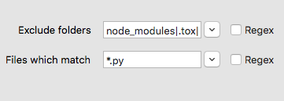

Search Features
Search Options
Rummage supports the default regular expression library (Re) that comes with Python and the 3rd party Regex library, and though the basic syntax and features are similar between the two, Regex provides many additional features, some of which causes the syntax to deviate greatly from Re. If you are using Re, you will not see all the options shown below. Please check out documentation for whichever engine you have chosen to learn more about its specific feature set. This documentation will only briefly cover the features that can be enabled in each engine.
Common Options
Both the Re and Regex engine have a couple of shared flags that are exposed in Rummage as checkboxes. These checkboxes are found directly under the search and replace text boxes.
| Toggle | Description |
|---|---|
| Search with regex | Alters the behavior of Search for and Replace with. When this is checked, both text boxes require regular expression patterns opposed to literal string. |
| Search case-sensitive | Forces the search to be case-sensitive. |
| Dot matches newline | . will also match newlines. |
| Use Unicode properties | Changes the behavior of \w, \W, \b, \B, \d, \D, \s, and \S to use use characters from the Unicode property database (will also modify \l, \L, \c, and \C in search patterns if using Backrefs with Re). |
| Format style replacements | Replace pattern will use a string replace format for replace. "{1} {1[-2]} {group_name[-3]}" etc. This is not available for Re without Backrefs, and is limited when using Re with Backrefs. Read more about format mode here. And remember that Rummage normalizes differences in Backrefs' and Regex's handling of back slash escapes in format replace mode. |
Regex Engine Options
If the Regex engine is being used for regular expressions, a couple of extra checkboxes will be available. Regex can be run in either VERSION0 or VERSION1 mode.
VERSION0 is compatible with Re regular expression patterns and has the extra fullcase toggle. VERSION1 does not have this toggle as it is enabled by default and can only be disabled inline via a pattern with (?-f). VERSION1 is not directly compatible with Re patterns as it adds a number of changes to the syntax allowing for more advanced search options.
| Toggle | Description |
|---|---|
| Best fuzzy match | If performing a fuzzy match, the best fuzzy match will be used. |
| Improve fuzzy fit | Makes fuzzy matching attempt to improve the fit of the next match that it finds. |
| Unicode word breaks | Will use proper Unicode word breaks and line separators when Unicode is enabled. See Regex documentation for more info. |
| Use POSIX matching | Use the POSIX standard for regular expression, which is to return the leftmost longest match. |
| Search backwards | Search backwards. The result of a reverse search is not necessarily the reverse of a forward search. |
| Full case-folding | Use full case folding. For Regex V0 only as it is enabled by default for V1. |
Rummage Options
Rummage has a couple of flags that are not specific to the regular expression engine.
| Toggle | Description |
|---|---|
| Boolean match | Will check each file up until the first match and will halt searching further. No line context info will be gathered or displayed. Does not apply when performing replaces. |
| Count only | Will just count the number of matches in the file and will not display line context information. This has no effect when applying replaces. |
| Create backups | On replace, files with matches will be backed up before applying the replacements; backup files will have the .rum-bak extension. |
| Force <encoding> | Forces all files to be opened with the specified encoding opposed to trying to detect the encoding. Encoding is hard and slow, so this is the preferred method for fast searches. On failure, binary will be used instead. |
| Use chain search | Puts Rummage into "search chain" mode. When in "search chain" mode, rummage will only use saved search chains for search and replace. |
| Use replace plugin | When enabled, Rummage will use a replace plugin instead of a replace pattern in order to do more advanced replaces. |
Encoding Guessing
It is always recommended, if you know the encoding, to use Force encoding as it will always be the fastest. Encoding guessing can be slow and not always accurate.
Encoding guessing is performed by chardet which is a pure Python library and is, by far, the slowest option. If you manually install cChardet, you will have a much faster guessing experience.
File Patterns

Wildcard patterns are the default for file and folder exclude patterns, but regular expression patterns can be used instead by selecting the Regex checkbox beside the pattern. Wildcard patterns and regular expression patterns will each be covered separately.
Wildcard
Rummage uses file patterns and folder excludes to filter which files are searched. The default is to use wild card patterns modeled after fnmatch and glob. Below is a list of the syntax that is accepted, but not all features are enabled by default.
If you would prefer regular expression file patterns, please see Regular Expression file patterns.
- File patterns are case insensitive by default, even for Linux/Unix systems. Case sensitivity can be enabled in Preferences.
- Slashes are generally treated as normal characters, but on windows they will be normalized:
/will become\\. There is no need to explicitly use\\in patterns on Windows, but if you do, it will be handled. .is always matched by*,?, and[]. Enable searching of hidden files in the file search options of the Search tab.
Basic Wildcard syntax
Rummage uses the wcmatch library to implement a specialized version of fnmatch wildcard patterns for file name matching.
| Pattern | Meaning |
|---|---|
* |
Matches everything. |
? |
Matches any single character. |
[seq] |
Matches any character in seq. |
[!seq] |
Matches any character not in seq. |
[[:alnum:]] |
POSIX style character classes inside sequences. The C locale is used for byte strings and Unicode properties for Unicode strings. See POSIX Character Classes in wcmatch's documentation for more info. |
\ |
Escapes characters. If applied to a meta character, it will be treated as a normal character. |
| |
Multiple patterns can be provided by separating them with |. |
- |
If - is found at the start of a pattern, it will match the inverse. |
\xhh |
By specifying \x followed by the hexadecimal byte value, you can specify characters directly. |
\uhhhh |
By specifying \u with the four value hexadecimal character value, you can specify Unicode characters directly. |
\Uhhhhhhhh |
By specifying \U with the eight value hexadecimal character value, you can specify wide Unicode characters directly. |
\N{name} |
By specifying \N{name}, where name is a valid Unicode character name, you can specify Unicode characters directly. |
\a |
ASCII Bell (BEL). |
\b |
ASCII Backspace (BS). |
\f |
ASCII Formfeed (FF). |
\n |
ASCII Linefeed (LF). |
\r |
ASCII Carriage Return (CR). |
\t |
ASCII Horizontal Tab (TAB). |
\v |
ASCII Vertical Tab (VT). |
Example Patterns
Used in the Files which match box, this would match all Python files of .py extensions excluding __init__.py:
*.py|-__init__.py
Used in the Files which match box, this would match any file type that is not .py.
-*.py
Used in the Exclude folders, this would exclude all folders with name followed by a single digit, except name3 which we will always be included.
name[0-9]|-name3
Used in the Exclude folders, this would exclude all folders except name3.
-name3
If you need to escape - or |, you can put them in a sequence: [-|]. Remember to place - at the beginning of a sequence as - is also used to specify character ranges: [a-z].
Extended Match Syntax
In Preferences, you can also enable extended match patterns. Extended match patterns allow you to provide pattern lists to provide more advanced logic.
| Pattern | Meaning |
|---|---|
?(pattern_list) |
The pattern matches if zero or one occurrences of any of the patterns in the pattern_list match the input string. Requires extended match feature to be enabled. |
*(pattern_list) |
The pattern matches if zero or more occurrences of any of the patterns in the pattern_list match the input string. Requires extended match feature to be enabled. |
+(pattern_list) |
The pattern matches if one or more occurrences of any of the patterns in the pattern_list match the input string. Requires extended match feature to be enabled. |
@(pattern_list) |
The pattern matches if exactly one occurrence of any of the patterns in the pattern_list match the input string. Requires extended match feature to be enabled. |
!(pattern_list) |
The pattern matches if the input string cannot be matched with any of the patterns in the pattern_list. Requires extended match feature to be enabled. |
{} |
Bash style brace expansions. This is applied to patterns before anything else. Requires brace expansion feature to be enabled. |
Example Extended Match Patterns
For example, if we wanted to match files this-file.txt and that-file.txt, we could provide the following pattern:
@(this|that)-file.txt
The | contained within an extended match group will not split the pattern. So it is safe to combine with other patterns:
@(this|that)-file.txt|*.py
Brace Expansion Syntax
In Preferences, you can enables Bash style brace expansion.
Brace expansion is applied before anything else. When applied, a pattern will be expanded into multiple patterns. Each pattern will then be parsed separately.
This is great for specifying complex combinations of patterns: a{b,{c,d}} → ab ac ad. Since each brace will generate a separate pattern for each combination that Rummage must evaluate. For simple patterns, it may make more sense to use extended match patterns which will only generate a single pattern: @(ab|ac|ad).
Be careful with patterns such as {1..100} which would generate one hundred patterns that will all get individually parsed. Sometimes you really need such a pattern, but be mindful that it will be slower as you generate larger sets of patterns.
| Pattern | Meaning |
|---|---|
{,} |
Bash style brace expansions. This is applied to patterns before anything else. Requires brace expansion feature to be enabled. |
{n1..n2[..i]} |
Bash style sequences that expands a range of numbers or alphabetic characters by an optional increment. |
Example Brace Expansion
a{b,{c,d}}→ab ac ad{1..3}→1 2 3{a..d}→a b c d{2..4..2}→2 4{a..e..2}→a c e
Full Path Matching
In Preferences, you can enable full path search for either file patterns and/or folder exclude patterns. This will allow for matching against a full path instead of the base file name. While it is referred to as "full path", it is still relative to the provided base path.
Assuming you Provided a base folder to search of /My/base/path, and you were to match a file /My/base/path/some/file.txt, normally your file pattern would match against file.txt, but with full path enabled, you'd match against some/file.txt. This means you'd have to use pattern like */*.txt instead of *.txt.
When full path matching is enabled for a pattern, slashes are generally treated special. Slashes will not be matched in [], *, ?, or extended patterns like *(...). Slashes can be matched by ** if globstar (**) is enabled in Preferences.
When full path matching is not enabled, wildcard patterns use base matching. That is to say, the wildcard patterns are applied to the base filename instead of the full path. If you enable base matching for full paths in Preferences, if a pattern has no slashes, it will perform base matching, and if there are slashes, it will perform a full path match. This allows you to have the best of both worlds. For instance, the following pattern would match all Markdown files under the document directory, but would exclude any file in any subdirectory under docs whose name starts with c: docs/**/*.md|-c*. Full path is used for the docs/**/*.md while base matching is used for -c*.
To learn more about full path matching with regular expression, checkout the regular expression section.
Regular Expression
Wildcard patterns are the default for file and folder exclude patterns, but regular expression patterns can be used instead by selecting the Regex checkbox beside the pattern. The regular expression engine set in Preferences is what will be used for file patterns. It will also respect the case sensitivity setting in Preferences for File/Folder Matching.
Full Path Matching
In Preferences, you can enable full path search for either file patterns and/or folder exclude patterns. This will allow for matching against a full path instead of the base file name. While it is referred to as "full path", it is still relative to the provided base path.
Assuming you Provided a base folder to search of /My/base/path, and you were to match a file /My/base/path/some/file.txt, normally your file pattern would match against file.txt, but with full path enabled, you'd match against some/file.txt. This means you'd have to use pattern like .*/.*.txt instead of .*.txt.
Backrefs
Rummage has the option of using a special wrapper called Backrefs. Backrefs can be applied to either Re or Regex. It adds various back references that are known to some regular expression engines, but not to Python's Re or Regex modules. The supported back references actually vary depending on whether it is being applied to Re or Regex. For instance, Backrefs only adds Unicode Properties to Re since Regex already has Unicode properties. To learn more about Backrefs adds, read the official Backrefs documentation. You can enable extended back references in the Preferences dialog.